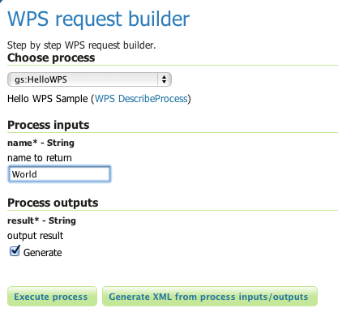

Implementing a WPS Process¶
This section describes how to implement a WPS process for use in GeoServer. It demonstrates the development artifacts and build steps necessary to create a WPS process, deploy it in GeoServer, and test it.
The example process used is a simple “Hello World” process which accepts a single input parameter and returns a single text output.
Note
See also GeoTools process tutorial
Prerequisites¶
Before starting, GeoServer must be built on the local system. See
the Source Code and Quickstart sections for details.
GeoServer must be built with WPS support as described in the
Maven Guide section.
Specifically, make sure GeoServer is built using the -Pwps profile.
Alternatively, the custom WPS plug-in can be deployed into an existing GeoServer instance (which must have the WPS extension installed).
Create the process module¶
To create a new WPS process plug-in module the first step is to create a Maven project. For this example the project will be called “hello_wps”.
Create a new directory named
hello_wpssomewhere on the file system.Add the following
pom.xmlto the root of the new module in thehello_wpsdirectory:
<project xmlns="http://maven.apache.org/POM/4.0.0"
xmlns:xsi="http://www.w3.org/2001/XMLSchema-instance"
xsi:schemaLocation="http://maven.apache.org/POM/4.0.0
http://maven.apache.org/maven-v4_0_0.xsd ">
<modelVersion>4.0.0</modelVersion>
<groupId>org.geoserver</groupId>
<artifactId>hello_wps</artifactId>
<packaging>jar</packaging>
<version>2.8-SNAPSHOT</version>
<name>hello_wps</name>
<properties>
<project.build.sourceEncoding>UTF-8</project.build.sourceEncoding>
<gt.version>14-SNAPSHOT</gt.version> <!-- change to GeoTools version -->
<gs.version>2.8-SNAPSHOT</gs.version> <!-- change to GeoServer version -->
</properties>
<dependencies>
<dependency>
<groupId>org.geotools</groupId>
<artifactId>gt-process</artifactId>
<version>${gt.version}</version>
</dependency>
<dependency>
<groupId>org.geoserver.extension</groupId>
<artifactId>gs-wps-core</artifactId>
<version>${gs.version}</version>
</dependency>
<dependency>
<groupId>org.geoserver</groupId>
<artifactId>gs-main</artifactId>
<version>${gs.version}</version>
<classifier>tests</classifier>
<scope>test</scope>
</dependency>
<dependency>
<groupId>junit</groupId>
<artifactId>junit</artifactId>
<version>4.11</version>
<scope>test</scope>
</dependency>
<dependency>
<groupId>com.mockrunner</groupId>
<artifactId>mockrunner</artifactId>
<version>0.3.6</version>
<scope>test</scope>
</dependency>
</dependencies>
<build>
<plugins>
<plugin>
<artifactId>maven-compiler-plugin</artifactId>
<configuration>
<source>1.8</source>
<target>1.8</target>
</configuration>
</plugin>
</plugins>
</build>
<repositories>
<repository>
<id>boundless</id>
<name>Boundless Maven Repository</name>
<url>https://repo.boundlessgeo.com/main</url>
</repository>
<repository>
<id>osgeo</id>
<name>Open Source Geospatial Foundation Repository</name>
<url>https://download.osgeo.org/webdav/geotools</url>
</repository>
</repositories>
</project>
Create the directory
src/main/javaunder the root of the new module:[hello_wps]% mkdir -p src/main/java
The project should now have the following structure:
hello_wps/ + pom.xml + src/ + main/ + java/
Create the process class¶
Create the package that will contain the custom WPS process.
For this example, create a package named
org.geoserver.hello.wpsinside the src/main/java directory structure.[hello_wps]% mkdir -p src/main/java/org/geoserver/hello/wps
Create the Java class that implements the custom WPS process.
Create a Java class called
HelloWPS.javainside the created package (make sure you are in the ‘src/main/java’ folder and not in the ‘src/test/java’ folder):
package org.geoserver.hello.wps; import org.geotools.process.factory.DescribeParameter; import org.geotools.process.factory.DescribeProcess; import org.geotools.process.factory.DescribeResult; import org.geoserver.wps.gs.GeoServerProcess; @DescribeProcess(title="helloWPS", description="Hello WPS Sample") public class HelloWPS implements GeoServerProcess { @DescribeResult(name="result", description="output result") public String execute(@DescribeParameter(name="name", description="name to return") String name) { return "Hello, " + name; } }
Register the process in GeoServer¶
GeoServer uses the Spring Framework to manage instantiation of components. This mechanism is used to register the process with GeoServer when it starts, which will make it discoverable via the WPS service interface.
Create a directory
src/main/resourcesunder the root of the new module:[hello_wps]% mkdir -p src/main/resources
The project should now have the following directory structure:
hello_wps/ + pom.xml + src/ + main/ + java/ + resources/
Create an
applicationContext.xmlin thesrc/main/resourcesdirectory with the following contents:<?xml version="1.0" encoding="UTF-8"?> <!DOCTYPE beans PUBLIC "-//SPRING//DTD BEAN//EN" "http://www.springframework.org/dtd/spring-beans.dtd"> <beans> <bean id="helloWPS" class="org.geoserver.hello.wps.HelloWPS"/> </beans>
Note
A process registered in the GeoServer spring context will be assigned to the “gs” process namespace.
Build and Deploy¶
To build the custom process, run the following command from the root of the project:
mvn clean install
This cleans the build area, compiles the code, and creates a JAR file in the target directory.
The JAR file name is determined by the name and version given to the project in the pom.xml file.
(for this example it is hello_wps-2.6-SNAPSHOT.jar).
To deploy the process module, copy this JAR file into the /WEB-INF/lib directory of GeoServer and then restart the instance.
Note
For alternative deployment options (i.e. running from source), see the Trying it out section inside Implementing a simple OWS service
Test¶
You can verify that the new process was deployed successfully by using the WPS Request Builder. The WPS Request Builder is a utility that allows invoking WPS processes through the GeoServer UI. Access this utility by navigating to the WPS Request Builder in the Demos section of the GeoServer Web Admin Interface.
In the WPS Request Builder select the process called gs:helloWPS from the Choose process dropdown.
The request builder displays an interface which allows calling the process, based on the
parameters and outputs described in the capabilities of the process
(which are defined by the process class annotations).
The following image shows the WPS Request Builder running the gs:helloWPS process.
Enter the desired parameter and click on Execute process to run it. A window with the expected result should appear.
WPS Request Builder, showing gs:HelloWPS process parameters¶
Accepting or returning raw data¶
The basic GeoServer WPS architecture is meant to offload and centralize input decoding and output encoding, leaving the processes to work against Java objects, and automatically creating new input and output types for all processes as soon as a new matching PPIO is registered.
It is however also possible to leave the process to accept both raw inputs and outputs, and do the parsing encoding itself. This suits well binding to external network or command line tools that are already doing parsing and encoding as their normal activities.
Raw inputs and outputs are represented by the RawData interface:
public interface RawData { /** * Returns the mime type of the stream's contents * * @return */ public String getMimeType(); /** * Gives access to the raw data contents. * * @return * @throws FileNotFoundException */ public InputStream getInputStream() throws IOException; /** * Optional field for output raw data, used by * WPS to generate a file extension * * @return */ public String getFileExtension(); }As an input, the RawData will be provided to the process, that will discover the mimeType chosen by the user, and will get access to the raw input stream of the data. As an output, the process will return a RawData and the WPS will see what mimeType the result will be in, get access to the raw contents, and grab a file extension to build file names for the user file downloads.
The process using RawData will also have to provide some extra metadata in the annotations, in order to declare which mime types are supported and to allow the process to know which output mime types were chosen in the Execute request. The extra annotations
mimeTypesandchosenMimeTypeare placed in themetasection of the result and parameter annotations:@DescribeResult(name = "result", description = "Output raster", meta = {"mimeTypes=application/json,text/xml", "chosenMimeType=outputMimeType" }) public RawData execute( @DescribeParameter(name = "data", meta = { "mimeTypes=text/plain" }) final RawData input, @DescribeParameter(name = "outputMimeType", min = 0) final String outputMimeType) {The above instructs GeoServer WPS about raw data handling:
The
resultoutput can be returned inapplication/jsonortext/xml, withapplication/jsonas the default oneThe mime type chosen by the user for the output will be provided to the process as the
outputMimeTypeparameter (and this parameter will be hidden from the DescribeProcess output)The
inputparameter will be advertised as supporting thetext/plainmime typeIn terms of building a
RawData, the process is free to create its own class if needed, or it can use one of the existingFileRawData,StringRawData,StreamRawDataimplementations.